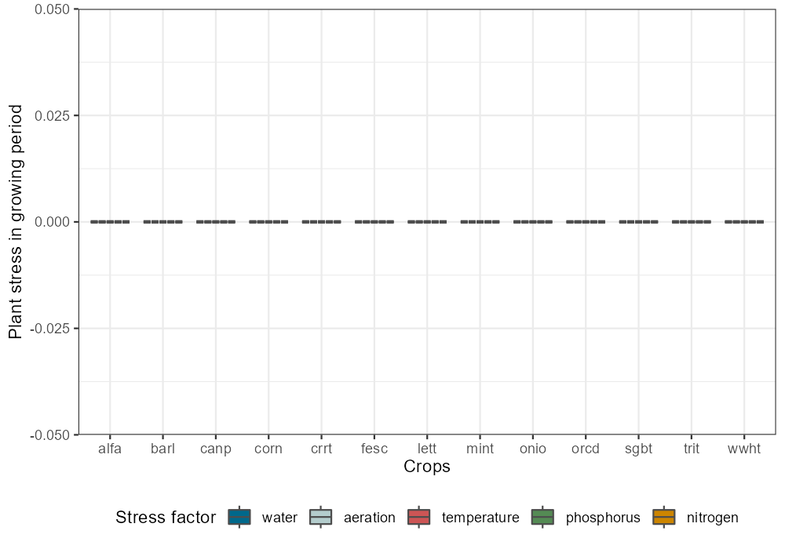
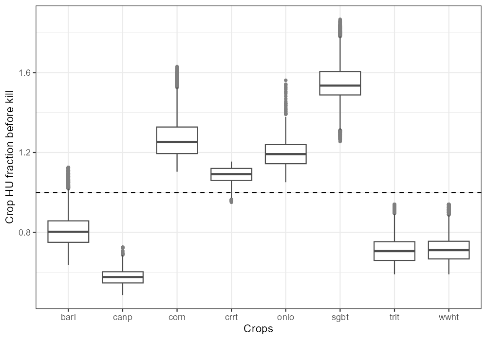
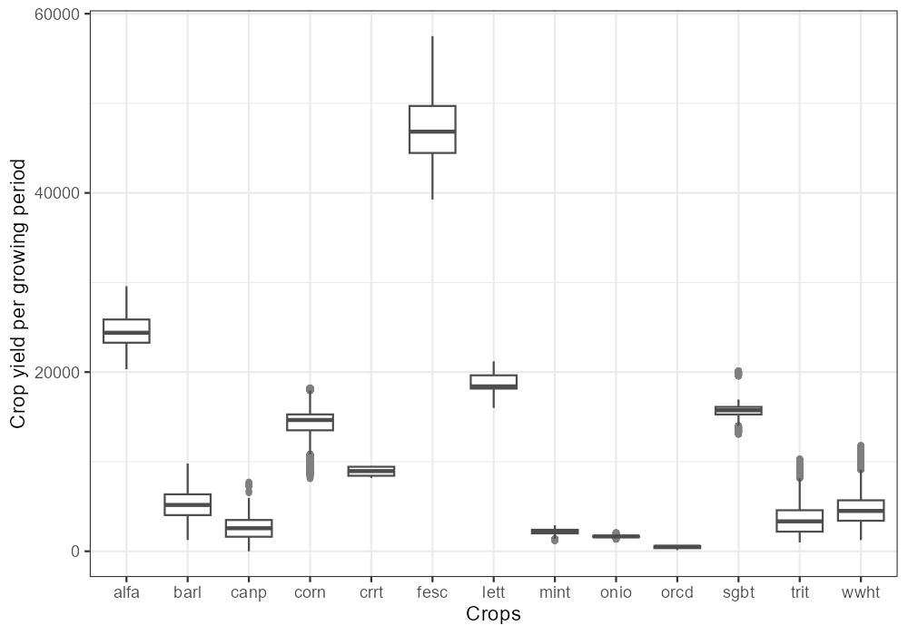
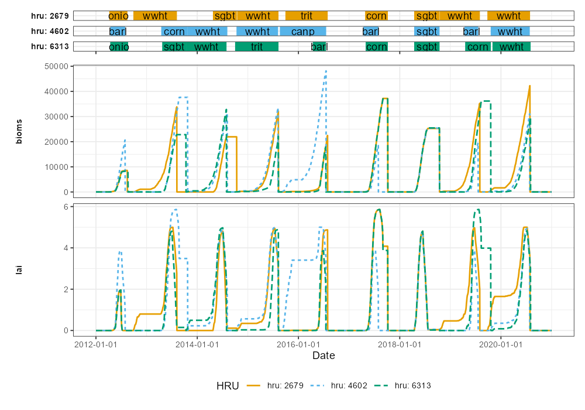

Examinig the unconstrained plant growth is the next step in the model setup verification. This step is important to verify if the selected plants and growing periods lead to plausible potential plant growth. The following steps are important to examine.
1. Plant stress
Plant growth without any simulated plant stress should result in the
potential biomass or yield a plant can gain given the climatic and soil
conditions of the simulated catchment. This step should focus on the
verification of the duration of the scheduled growing period or if the
selected crop parametrizations meet the climatic conditions. The crop
specific analyses in this step can be performed with the function
plot_variable_at_harvkill. First check if all plant
stresses were really deactivated in the simulations (The figure should
show all 0 values):
plot_variable_at_harvkill(sim_nostress, variable = 'stress')
2. Potential heat unit fractions
A relevant indicator for the duration of the growing period is the potential heat unit fraction. A value of 1 means that a plant reached full maturity. Some grains should additionally dry off on the field. Thus a value of ~1.2 should be reached. The following plot should help you to see if the crops in the scheduled managements reach maturity. Crops which show many values smaller than 1 must be further analyzed. But also values much larger than 1 must be treated as implausible and require to perform further analyses.
plot_variable_at_harvkill(sim_nostress, variable = 'phu')
3. Unconstrained yields
If the potential heat unit fractions are in a plausible range the unconstrained yields can be analyzed. The plotted values will likely be larger than region specific literature values, but should not be much lower than literature values. Otherwise this indicates a potential issue with the development of the respective crop:
plot_variable_at_harvkill(sim_nostress, variable = 'yield')
4. Further analysis of identified issues
If for example unusually high heat unit values, or low (almost zero) yields are identified these must be further investigated. This can be done by first filtering the HRUs that show the issue and then perform some more detailed plots which may support the identification of the issue.
You can filter for HRUs of interest with the function
filter_hru_at_harvkill. The function could be used with one
or multiple crop, phu,
plant_bioms, yield, water_stress,
aero_stress, temp_stress,
n_stress and p_stress variables. The example
below filters HRUs with large PHU values at harvest kill.
high_phu <- filter_hru_at_harvkill(sim_nostress, phu > 1.86)
high_phu## hru date crop phu plant_bioms yield water_stress aero_stress
## 1 2679 2018-10-15 sgbt 1.863293 25277.69 16809.66 0 0
## 2 6313 2018-10-15 sgbt 1.867149 25467.05 16935.59 0 0
## 3 4602 2018-10-15 sgbt 1.862455 25388.35 16883.26 0 0
## temp_stress n_stress p_stress
## 1 0 0 0
## 2 0 0 0
## 3 0 0 0If you then want to look into the crop development over time you can
do that for example with the function plot_hru_pw_day. In
this example high PHU values were found for sugar beets, but ofor the
HRU #2679, #4602 and #6313. Below the function plots the LAI and the bio
mass development for crops on this HRU over several years.
plot_hru_pw_day(sim_nostress,
hru_id = c(2679, 4602, 6313),
var = c('lai', 'bioms'),
years = 2012:2020,
add_crop = TRUE)
To continue the analysis, please proceed to step 4.